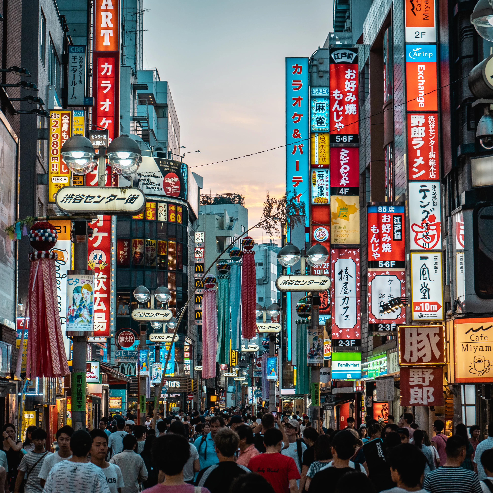

Top destinations in Tohoku
Tokyo Metropolis

Tokyo
Japan's capital and largest city.
Izu Oshima
The largest island among the Izu Islands.
Ogasawara Islands
Remote islands 1000 kilometers south of Tokyo.
Kanagawa Prefecture
Chiba Prefecture
Narita
Site of Tokyo's international airport.
Boso Peninsula
Large peninsula southeast of Tokyo.
Saitama Prefecture
Gunma Prefecture
Kusatsu Onsen
One of Japan's best hot spring resorts.
Ikaho Onsen
Hot spring resort famous for its stone stairs.
Minakami
Popular hot spring and outdoor resort.

Manza Onsen
Hot spring resort with Japan's most sulfuric waters.
Tomioka
Site of a Japan's first modern silk factory.
Shima Onsen
Calm hot spring town in a mountain valley.
Tochigi Prefecture
Nikko
Site of Nikko Toshogu, Ieyasu's mausoleum.

Nasu-Shiobara
Resort area with hiking trails and hot springs
Utsunomiya
Prefectural capital of Tochigi Prefecture.
Ibaraki Prefecture
Mito
Prefectural capital known for its nice garden.
Fukuroda Falls
One of Japan's top three waterfalls.
Ushiku Daibutsu
Japan's tallest bronze statue of Buddha